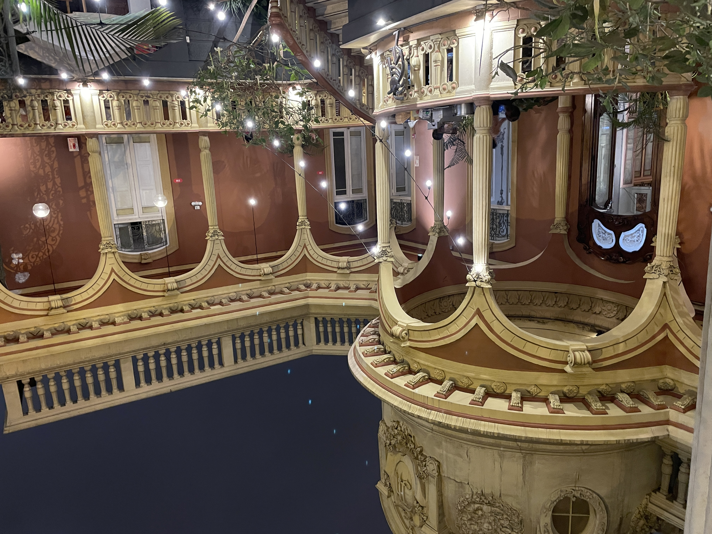
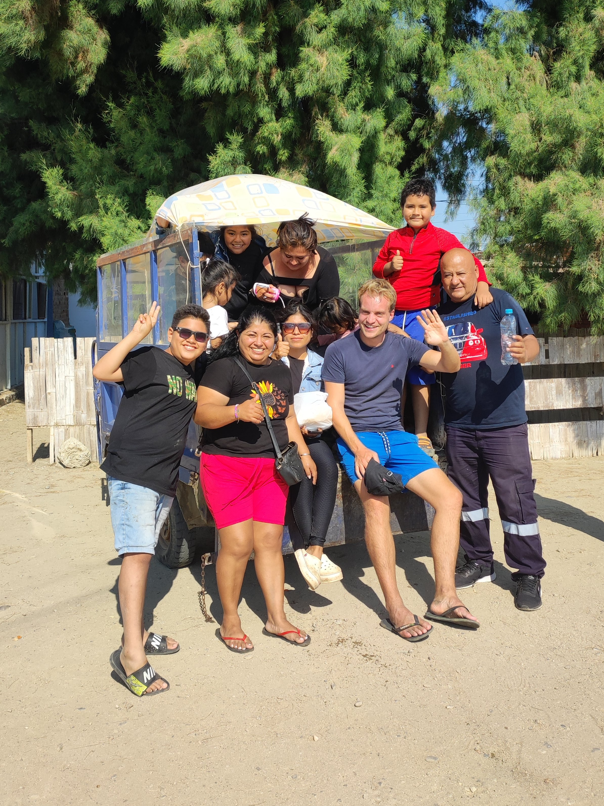
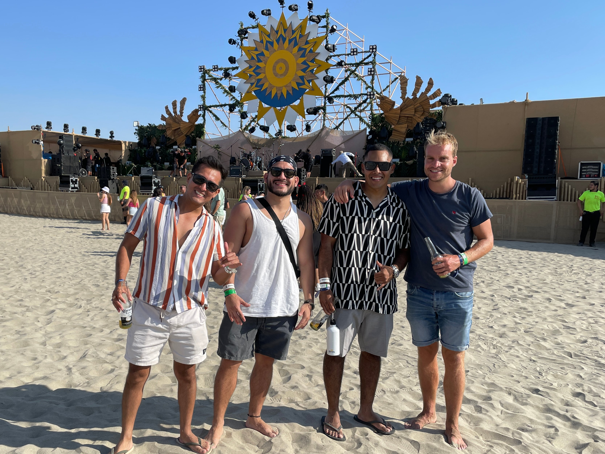
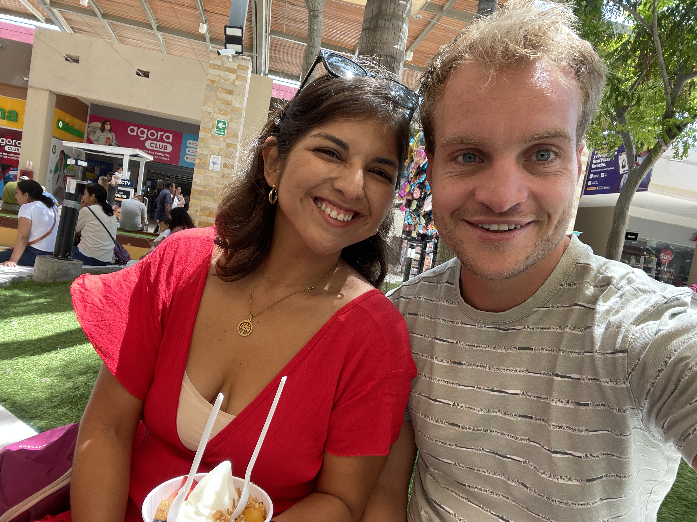

11 Af van het
gebaande pad
Een verre reis,
een ongebruikelijke route en
nieuwe ontmoetingen.

 Na drie volle reisdagen kwam ik eindelijk aan in de hoofdstad van Peru, Lima. De avond was al gevallen en ik stond met mijn rolkoffertje netjes bij de parkeerplaats van het vliegveld te wachten op de bus die natuurlijk in geen velden of wegen te bekennen was. De gebouwen vielen op met verf en versieringen in alle kleuren van de regenboog. Wat verderop stond een groep muzikanten die traditionele Peruaanse liedjes zongen. Ondanks de gemoedelijkheid was ik er nog niet helemaal op gerust. Op het internet kwam ik niet alleen tegen dat ze in Peru graag ceviche lusten, witvis getrokken in citroensap en dat er de beroemde 15e eeuwse incastad Machu Picchu gelegen is, maar ook dat je na zonsondergang op je hoede moet zijn voor diefstal. Ik had nog geen mobiele verbinding en was dus extra opgelucht toen ik na een uur wachten bij een andere busmaatschappij kon instappen in dezelfde richting.
Na drie volle reisdagen kwam ik eindelijk aan in de hoofdstad van Peru, Lima. De avond was al gevallen en ik stond met mijn rolkoffertje netjes bij de parkeerplaats van het vliegveld te wachten op de bus die natuurlijk in geen velden of wegen te bekennen was. De gebouwen vielen op met verf en versieringen in alle kleuren van de regenboog. Wat verderop stond een groep muzikanten die traditionele Peruaanse liedjes zongen. Ondanks de gemoedelijkheid was ik er nog niet helemaal op gerust. Op het internet kwam ik niet alleen tegen dat ze in Peru graag ceviche lusten, witvis getrokken in citroensap en dat er de beroemde 15e eeuwse incastad Machu Picchu gelegen is, maar ook dat je na zonsondergang op je hoede moet zijn voor diefstal. Ik had nog geen mobiele verbinding en was dus extra opgelucht toen ik na een uur wachten bij een andere busmaatschappij kon instappen in dezelfde richting.
Voor ik het wist reden we op een snelweg, pal langs het strand en langs de rand van deze 10 miljoen inwoners tellende megastad. We reden via Callao, een wijk waar veel armoede heerst en veel criminaliteit is. Als je dan uit je raampje kijkt kun je je goed inbeelden dat je daar 's nachts als blanke man beter niet rondloopt. Overal zie je huisjes van golfplaten, honden op straat en mensen op blote voeten. Na een uurtje naderde de bus mijn wijk Barranco. Een veel modernere en luxere wijk voor Zuid-Amerikaanse begrippen, maar bij lange na nog niet te vergelijken met Europese steden. Stroomkabels op ooghoogte, verdwenen putdeksels, groentezaak met opa, vader en kleinzoon, vriendelijk glimlachend. Wat een indruk! Vanaf de bushalte was het nog maar een klein stukje lopen tot mijn hostel, genaamd Kokopelli. Een prachtig oud paleis met ruime kamers, ontzettend vriendelijk personeel en voor mij natuurlijk erg wenselijk, een cowerkruimte.
 Dat je op je dertigste nog eens het backpackers leven mag ervaren, in een slaapzaal met 16 bedden, met mensen vol reisplannen die elkaar vertellen waar ze heen willen gaan. Het was een enerverende eerste week met als grootste uitdaging: Wanneer laat ik de touwtjes vieren en ben ik toerist, en wanneer duik ik achter mijn pc om te programmeren? Je kunt dan wel voor 4 euro uit eten, maar iedere keer voor ontbijt, lunch en avondeten, daar ben je na een dag ook wel klaar mee, al helemaal als je bedenkt dat ik in Spanje haast nooit uit eten ging. Tjongejonge, Spanje, dat mooie leven lijkt alweer eeuwen geleden. Ik gunde mezelf wat tijd om te wennen aan Lima en kwam er de laatste dagen wat beter in, mede dankzij een tafeltennistoernooitje in het hostel, een bachata feestje een stapavond georganiseerd door een app groepje genaamd ‘Expats en friends in Lima’.
Dat je op je dertigste nog eens het backpackers leven mag ervaren, in een slaapzaal met 16 bedden, met mensen vol reisplannen die elkaar vertellen waar ze heen willen gaan. Het was een enerverende eerste week met als grootste uitdaging: Wanneer laat ik de touwtjes vieren en ben ik toerist, en wanneer duik ik achter mijn pc om te programmeren? Je kunt dan wel voor 4 euro uit eten, maar iedere keer voor ontbijt, lunch en avondeten, daar ben je na een dag ook wel klaar mee, al helemaal als je bedenkt dat ik in Spanje haast nooit uit eten ging. Tjongejonge, Spanje, dat mooie leven lijkt alweer eeuwen geleden. Ik gunde mezelf wat tijd om te wennen aan Lima en kwam er de laatste dagen wat beter in, mede dankzij een tafeltennistoernooitje in het hostel, een bachata feestje een stapavond georganiseerd door een app groepje genaamd ‘Expats en friends in Lima’.
 Voor het eerst in 2,5 jaar tijd ontmoette ik een 21 jarige programmeur die net als ik met kunstmatige intelligentie bezig was. Maar dan wel even next level. Toen ik een biertje op had, sprak ik hem om 02.00 uur 's nachts en zei hij dat hij nog niet kon gaan slapen omdat zijn modellen nog niet klaar waren met trainen. Hij werkte voor een mining netwerk genaamd Bittensor waarbij ‘het netwerk’ zijn werkgever was en hij uitbetaald kreeg in bitcoin. Hoewel een tikkeltje extreem, iemand ontmoeten die ook zo’n grote passie heeft voor kunstmatige intelligentie, was het ook wel weer erg inspirerend en triggerde het me om na een aantal dagen toch maar eens de laptop open te slaan.Ondertussen hielden de meeste backpackers uit het hostel zich vooral bezig met hoe hun reis eruit zou komen te zien. Vrijwel iedereen trekt naar het zuiden voor de lagunes van Huacachina, de Galapagos van Peru en het Titicaca meer. Maar om in zo’n stoet van reizigers volgens een bepaalde planning die ‘highlights’ af te gaan, dat was natuurlijk niets voor mij. Met een 3 maanden visum had ik totaal geen haast, en dus vertrok ik, een tikkeltje eigenwijs richting het noorden waar ik had gehoord dat je goed kon surfen. Nog in Nederland had ik al in mijn hoofd het idee om ergens aan zee een appartementje te huren, wat te programmeren en in mijn vrije tijd lekker te genieten van het strand.
Voor het eerst in 2,5 jaar tijd ontmoette ik een 21 jarige programmeur die net als ik met kunstmatige intelligentie bezig was. Maar dan wel even next level. Toen ik een biertje op had, sprak ik hem om 02.00 uur 's nachts en zei hij dat hij nog niet kon gaan slapen omdat zijn modellen nog niet klaar waren met trainen. Hij werkte voor een mining netwerk genaamd Bittensor waarbij ‘het netwerk’ zijn werkgever was en hij uitbetaald kreeg in bitcoin. Hoewel een tikkeltje extreem, iemand ontmoeten die ook zo’n grote passie heeft voor kunstmatige intelligentie, was het ook wel weer erg inspirerend en triggerde het me om na een aantal dagen toch maar eens de laptop open te slaan.Ondertussen hielden de meeste backpackers uit het hostel zich vooral bezig met hoe hun reis eruit zou komen te zien. Vrijwel iedereen trekt naar het zuiden voor de lagunes van Huacachina, de Galapagos van Peru en het Titicaca meer. Maar om in zo’n stoet van reizigers volgens een bepaalde planning die ‘highlights’ af te gaan, dat was natuurlijk niets voor mij. Met een 3 maanden visum had ik totaal geen haast, en dus vertrok ik, een tikkeltje eigenwijs richting het noorden waar ik had gehoord dat je goed kon surfen. Nog in Nederland had ik al in mijn hoofd het idee om ergens aan zee een appartementje te huren, wat te programmeren en in mijn vrije tijd lekker te genieten van het strand.

Het was zo ver met de bus dat ik twee nachten onderweg was om in de stad Mancora, in Noord-Peru te komen. Na de eerste nachtbus overleefd te hebben zocht ik alvast een hostel/appartement op om te verblijven maar alles bleek mutje vol te zitten vanwege de feestdagen waarbij de onafhankelijkheid van het Spaanse kolonialisme gevierd werd. Gelukkig vond ik op de app Hostelworld nog een bed in een betaalbaar hostel, al was dit wel een party hostel. En de coworking plek waarmee het hostel adverteerder bleek bij aankomst te bestaan uit twee terrasstoelen en een bartafel naast de dj boot. Meteen geleerd om mezelf dus flexibel op te stellen. De eerste dagen hier waren weer behoorlijk wennen. Mijn eerste indruk was echt wat een grote puinzooi hier, met overal kakkerlakken (wat later krekels bleken te zijn) en toeterend tuc tucs. Met gemak kon ik hier een ochtend zoet zijn met het zoeken naar een geschikte eetplek, een plek voor het wassen van je kleren of het zoeken naar een leuke surfschool. Toen de feestdagen aanbraken kwamen drie Peruaanse jongens uit de buurt van Lima mijn dorm binnen: Manuel, Oscar en Martin. Ze waren super vriendelijk en nodigden me steeds uit om dingen samen te doen. In Lima was het gebruikelijker Engels te spreken en dus was ik blij dat we nu eindelijk over konden op het oefenen van het Spaans. Toen het feest in het hostel met allerlei spelletjes voorbij was, reden we naar een locatie buiten Mancora waar nog een techno feestje gaande was. De tuktuk zat vol en dus liet de chauffeur me achterop de laadklep aanhangen, wat geen probleem was. Het was zo lang geleden dat ik zo’n spontaan avondje had gehad, en even was daar de oude Jorrit weer terug die zo gehouden had van het bezoeken van festivals en het stappen in Breda.
 Het vooraf bedachte plan van een appartementje en surfen bleek wat lastiger te realiseren dan vooraf gedacht. Dan was er weer geen bureau aanwezig, of dan lag de prijs vier keer hoger dan ik in gedachten had. Iemand die ik had gesproken uit Lima leek bijna iets voor mij geregeld te hebben toen hij plotseling aan mij vroeg of ik in ruil hiervoor zijn verzekering voor zijn reis naar Europa wilde betalen. Huh! En als daar dan nog 20 euro voor een dagje surfen bij optelt dan is je salaris er ook binnen no time doorheen. Ik had inmiddels last van mijn rug van het programmeren in mijn stapelbed en dacht: bekijk het maar, ik boek alvast mijn volgende bestemming op twee uurtjes rijden van de kust, met comfortabel bed, met bureau en vooral even lekker een plekje zonder andere mensen. Dat werd uiteindelijk Piura.
Het vooraf bedachte plan van een appartementje en surfen bleek wat lastiger te realiseren dan vooraf gedacht. Dan was er weer geen bureau aanwezig, of dan lag de prijs vier keer hoger dan ik in gedachten had. Iemand die ik had gesproken uit Lima leek bijna iets voor mij geregeld te hebben toen hij plotseling aan mij vroeg of ik in ruil hiervoor zijn verzekering voor zijn reis naar Europa wilde betalen. Huh! En als daar dan nog 20 euro voor een dagje surfen bij optelt dan is je salaris er ook binnen no time doorheen. Ik had inmiddels last van mijn rug van het programmeren in mijn stapelbed en dacht: bekijk het maar, ik boek alvast mijn volgende bestemming op twee uurtjes rijden van de kust, met comfortabel bed, met bureau en vooral even lekker een plekje zonder andere mensen. Dat werd uiteindelijk Piura.
De drie Peruaanse jongens met wie ik een goede klik had, bezochten de dag erna een Corona Sunset Festival in het nabijgelegen stadje Organos. Met in het achterhoofd dat ik mezelf heb voorgenomen om hier in Peru weer wat meer spontane dingen te gaan ondernemen zei ik ‘Zeg, kan ik nog bij jullie aansluiten?’ Het was een geweldige ervaring. Ze hadden het festival aangekleed met allerlei beige gekleurd décor en een stage met twee dieren en een zon die verwezen naar het logo van het goddelijke Corona biertje. De muziek wisselde zich af met reggae, techno, en allerlei latin zoals het plaatje Ojitos lindos. Vooral toen de zon onderging, werd het een sfeervolle bedoeling. Als je dan naar de oneindige zee kijkt is het onwerkelijk dat je zo ver weg ben van thuis. Aan het eind van het feest raakte ik aan een gezellig praatje met een meid genaamd Veronica. die mij uitnodigde om de volgende dag bij haar vakantiebungalow in Organos langs te komen. De volgende dag nam ik dus in het hostel afscheid van de Peruaanse jongens en vertrok naar Organos waar aan de rand van de stad op een grote berg een houten bungalow stond. Het was een 38 jarige ondernemende dame afkomstig uit Lima die verschillende huizen verhuurt op airbnb en daarnaast toevallig ook net als ik bos- en natuurbeheer heeft gestudeerd. Dit huis was niet zomaar een bungalow want er zat een zwembad bij en een fenomenaal 180 graden uitzicht over de hele kustlijn. Het was gezellig om elkaar wat beter te leren kennen en de volgende dag ben ik dan echt vertrokken met de bus richting Piura.
En dan zit je na zulke mooie spontane ontmoetingen opeens een week in een klein kamertje met enkel een bed, tafel, en stoel midden in de chaos van een onbekende stad Piura. Ik ben hier in drie dagen tijd nog geen enkele niet Peruaan tegengekomen. Voor de veiligheid heb ik mezelf maar voorgenomen om rond 18.00, wanneer het donker wordt huiswaarts te keren en niet meer alleen op straat te gaan. Hierdoor voelt het een beetje alsof zit ondergedoken. Het klinkt allemaal erger dan het is. En daarnaast is er zat tijd om de hele reis tot nu toe even wat te laten bezinken. Mezelf te vermaken met potjes patience, mijn boek ‘Fall of Giants’ van Kenn Follet of een goede oude sportsessie doen via Insanity workout video's in mijn veel te kleine kamer. En als ik eenmaal in die code zit dan is dat echt geweldig om daar mee bezig te zijn. Ook nu het wat rustiger is ga ik de dagen goed doorkomen. Lieve mensen, ik hoop dat het jullie goed gaat en ik vind het leuk dat jullie de blog weer gelezen hebben. Veel groeten uit Piura.